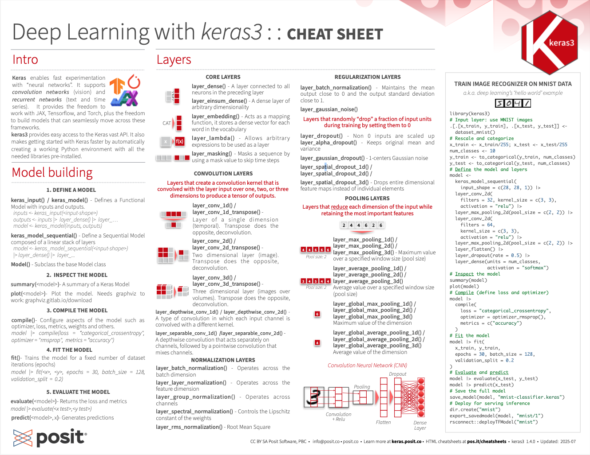

Download PDF
Translations (PDF)
Keras is a high-level neural networks API developed with a focus on enabling fast experimentation. It supports multiple back-ends, including TensorFlow, Jax and Torch.
Backends like TensorFlow are lower level mathematical libraries for building deep neural network architectures. The keras3 R package makes it easy to use Keras with any backend in R.
Read more at:
https://keras.posit.co
https://www.manning.com/books/deep-learning-with-r-second-edition
The keras3 R package uses the Python keras library. You can install all the prerequisites directly from R See ?keras3::install_keras for details and options.
This installs the required libraries in virtual environment named ‘r-keras’. It will automatically detect if a GPU is available.
The “Hello, World!” of deep learning
# input layer: use MNIST images
mnist <- dataset_mnist()
x_train <- mnist$train$x; y_train <- mnist$train$y
x_test <- mnist$test$x; y_test <- mnist$test$y
# reshape and rescale
x_train <- array_reshape(x_train, c(nrow(x_train), 784))
x_test <- array_reshape(x_test, c(nrow(x_test), 784))
x_train <- x_train / 255; x_test <- x_test / 255
y_train <- to_categorical(y_train, 10)
y_test <- to_categorical(y_test, 10)
# defining the model and layers
model <-
keras_model_sequential(input_shape = c(28, 28, 1))
model |>
layer_conv_2d(filters = 32, kernel_size = c(3, 3),
activation = "relu") |>
layer_max_pooling_2d(pool_size = c(2, 2)) |>
layer_conv_2d(filters = 64, kernel_size = c(3, 3),
activation = "relu") |>
layer_max_pooling_2d(pool_size = c(2, 2)) |>
layer_flatten() |>
layer_dropout(rate = 0.5) |>
layer_dense(units = num_classes,
activation = "softmax")
# View the model summary
summary(model)
plot(model)
# compile (define loss and optimizer)
model |>
compile(
loss = 'categorical_crossentropy',
optimizer = optimizer_rmsprop(),
metrics = c('accuracy')
)
# train (fit)
model |> fit(
x_train, y_train,
epochs = 30, batch_size = 128,
validation_split = 0.2
)
model |> evaluate(x_test, y_test)
model |> predict(x_test)
# save the full model
save_model(model, "mnist-classifier.keras")
# deploy for serving inference.
dir.create("serving-mnist-classifier")
export_savedmodel(modek, "serving-mnist-classifier/1")
rsconnect::deployTFModel("serving-mnist-classifier")keras_input() and keras_model()Define a Functional Model with inputs and outputs.
keras_model_sequential()Define a Sequential Model composed of a linear stack of layers
Model()Subclass the base Model class
compile(object, optimizer, loss, metrics = NULL): Configure a Keras model for training.
fit(object, x = NULL, y = NULL, batch_size = NULL, epochs = 10, verbose = 1, callbacks = NULL, ...): Train a Keras model for a fixed number of epochs (iterations)
Customize training:
fit():Callback().train_on_batch() in a custom training loop.Model() and implement a custom train_step method.model$optimizer$apply(gradients, weights)print(model): Print a summary of a Keras model
plot(model, show_shapes = FALSE, show_dtype = FALSE, show_layer_names = FALSE, ...): Plot a Keras model
evaluate(object, x = NULL, y = NULL, batch_size = NULL): Evaluate a Keras model.predict(): Generate predictions from a Keras model.
predict_on_batch(): Returns predictions for a single batch of samples.
save_model(); load_model(): Save/Load models using the “.keras” file format.
save_model_weights(); load_model_weights(): Save/load model weights to/from “.h5” files.
save_model_config(); load_model_config(): Save/load model architecture to/from a “.json” file.
layer_dense(): Add a densely-connected NN layer to an output.
layer_einsum_dense(): Add a dense layer with arbitrary dimensionality.
layer_activation(): Apply an activation function to an output.
layer_dropout(): Applies Dropout to the input.
layer_reshape(): Reshapes an output to a certain shape.
layer_permute(): Permute the dimensions of an input according to a given pattern.
layer_repeat_vector(): Repeats the input n times.
layer_lambda(object, f): Wraps arbitrary expression as a layer.
layer_activity_regularization(): Layer that applies an update to the cost function based input activity.
layer_masking(): Masks a sequence by using a mask value to skip timesteps.
layer_flatten(): Flattens an input.
layer_conv_1d(): 1D, e.g. temporal convolution.
layer_conv_2d_transpose(): Transposed 2D (deconvolution).
layer_conv_2d() : 2D, e.g. spatial convolution over images.
layer_conv_3d_transpose(): Transposed 3D (deconvolution).
layer_conv_3d(): 3D, e.g. spatial convolution over volumes.
layer_conv_lstm_2d(): Convolutional LSTM.
layer_separable_conv_2d(): Depthwise separable 2D.
layer_upsampling_1d(); layer_upsampling_2d(); layer_upsampling_3d(): Upsampling layer.
layer_zero_padding_1d(); layer_zero_padding_2d(); layer_zero_padding_3d(): Zero-padding layer.
layer_cropping_1d(); layer_cropping_2d(); layer_cropping_3d(): Cropping layer.
layer_max_pooling_1d(); layer_max_pooling_2d(); layer_max_pooling_3d(): Maximum pooling for 1D to 3D.
layer_average_pooling_1d(); layer_average_pooling_2d(); layer_average_pooling_3d(): Average pooling for 1D to 3D.
layer_global_max_pooling_1d(); layer_global_max_pooling_2d(); layer_global_max_pooling_3d(): Global maximum pooling.
layer_global_average_pooling_1d(); layer_global_average_pooling_2d(); layer_global_average_pooling_3d(): Global average pooling.
image_dataset_from_directory() Create a TF Dataset from image files in a directory.
image_load(), image_from_array(), image_to_array(), image_array_save(): Work with PIL Image instances
Operations that transform image tensors in deterministic ways.
op_image_crop()op_image_extract_patches()op_image_pad()op_image_resize()op_image_affine_transform()op_image_map_coordinates()op_image_rgb_to_grayscale()Resize images without aspect ratio distortion.
image_smart_resize():Builtin image preprocessing layers. Note, any image operation function can also be used as a layer in a Model, or used in layer_lambda().
layer_resizing()layer_rescaling()layer_center_crop()Preprocessing layers that randomly augment image inputs during training.
layer_random_crop()layer_random_flip()layer_random_translation()layer_random_rotation()layer_random_zoom()layer_random_contrast()layer_random_brightness()timeseries_dataset_from_array(): Generate a TF Dataset of sliding windows over a timeseries provided as array.
audio_dataset_from_directory(): Generate a TF Dataset from audio files.
pad_sequences(): Pad sequences to the same length
text_dataset_from_directory(): Generate a TF Dataset from text files in a directory.
layer_text_vectorization(), get_vocabulary(), set_vocabulary(): Map text to integer sequences.
layer_normalization(): Normalizes continuous features.
layer_discretization(): Buckets continuous features by ranges.
layer_category_encoding(): Encode integer features.
layer_hashing(): Hash and bin categorical features.
layer_hashed_crossing(): Cross features using the “hashing trick”.
layer_string_lookup(): Map strings to (possibly encoded) indices.
layer_integer_lookup(): Map integers to (possibly encoded) indices.
One-stop utility for preprocessing and encoding structured data. Define a feature space from a list of table columns (features).
Adapt the feature space to a dataset
Use the adapted feature_space preprocessing layer as a layer in a Keras Model, or in the data input pipeline with tfdatasets::dataset_map()
Available features:
feature_float()feature_float_rescaled()feature_float_normalized()feature_float_discretized()feature_integer_categorical()feature_integer_hashed()feature_string_categorical()feature_string_hashed()feature_cross()feature_custom()Keras applications are deep learning models that are made available alongside pre-trained weights. These models can be used for prediction, feature extraction, and fine-tuning.
MobileNetV3 Model, pre-trained on ImageNet
application_mobilenet_v3_large()application_mobilenet_v3_small()EfficientNetV2 Model, pre-trained on ImageNet
application_efficientnet_v2s()application_efficientnet_v2m()application_efficientnet_v2l()Inception-ResNet v2 and v3 model, with weights trained on ImageNet
application_inception_resnet_v2()application_inception_v3()VGG16 and VGG19 models
application_vgg16()application_vgg19()ResNet50 model
application_resnet50():NASNet model architecture
application_nasnet_large()application_nasnet_mobile()ImageNet is a large database of images with labels, extensively used for deep learning
Preprocesses a tensor encoding a batch of images for an application, and decodes predictions from an application. - application_preprocess_inputs() - application_decode_predictions()
A callback is a set of functions to be applied at given stages of the training procedure. You can use callbacks to get a view on internal states and statistics of the model during training.
allback_early_stopping(): Stop training when a monitored quantity has stopped improving.
callback_learning_rate_scheduler(): Learning rate scheduler.
callback_tensorboard(): TensorBoard basic visualizations.
CC BY SA Posit Software, PBC • info@posit.co • posit.co
Learn more at keras.posit.co.
Updated: 2024-06.